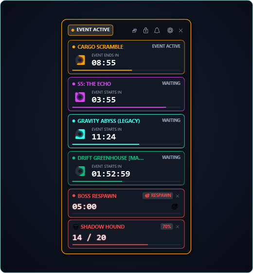
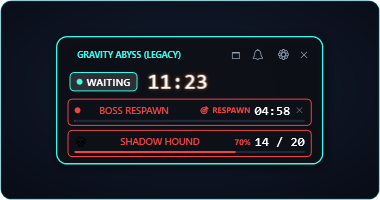
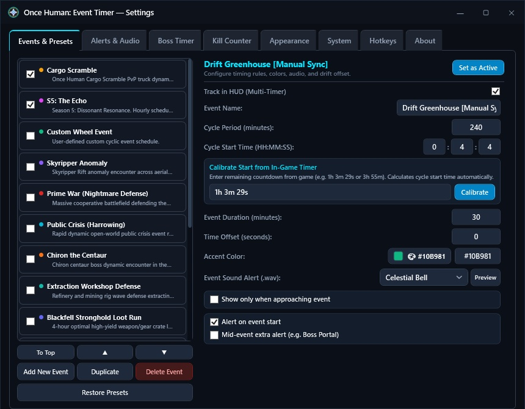
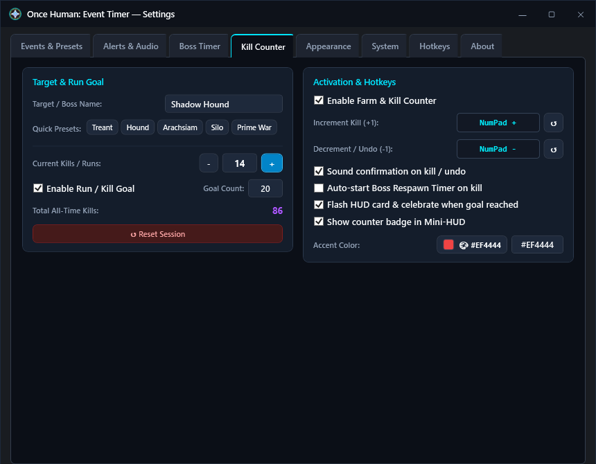
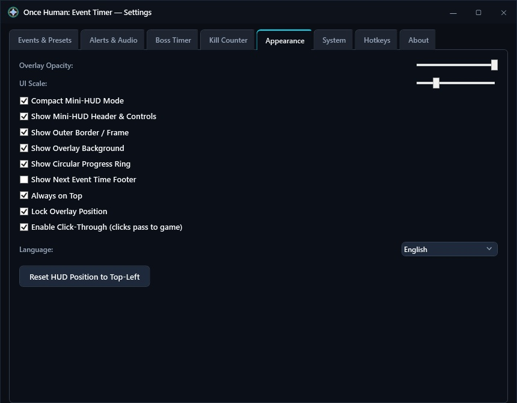
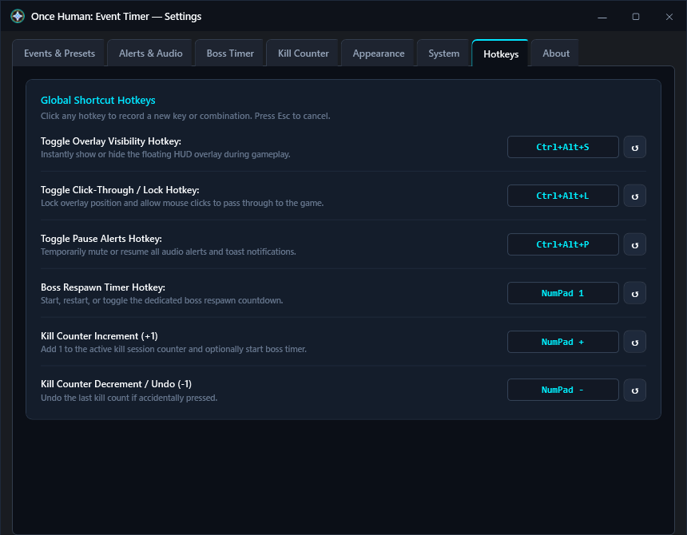

Never Miss an Event in Once Human
A modern, lightweight Windows desktop HUD overlay engineered specifically for Once Human. Track recurring world events, dedicated boss respawns, and dungeon farming runs with procedural audio alarms and zero FPS drop.

Full HUD tracking multiple concurrent events with circular countdown rings & progress bars
Essential Features for Every Meta Player
Engineered specifically for active Once Human players: zero input latency, zero memory injection, and microsecond-level scheduling accuracy.
Live Event Schedule & Mid-Event Alerts
Track fixed world events like Cargo Scramble and Visional Wheel (S5 The Echo) in real time with mid-event boss alerts. For dynamic spawns like Drift Greenhouse, quickly calibrate per-world cooldowns directly from in-game countdowns.
Dedicated Boss Respawn Timer
Trigger elite and world boss respawn countdowns instantly with Alt+NumPad 1. Includes early warning chimes before spawn, celebratory 00:00 alarms, dynamic HUD badges, and Windows toast notifications.
Smart Farm & Kill Counter
Effortlessly count dungeon runs and boss farming sessions with Alt+NumPad + and Alt+NumPad -. Set run goals with animated progress bars, goal celebration chimes, and optional chained Boss Timer auto-start on kill.
DirectFlip & Zero FPS Drop
Engineered with WS_EX_NOACTIVATE and WS_EX_TRANSPARENT to guarantee mouse clicks pass directly into Once Human. Informs Windows DWM never to steal focus, preserving GPU Multi-Plane Overlay (MPO) and DirectFlip.
Out-of-Process Architecture
Operates strictly out-of-process. Zero memory reading, zero memory writing, zero DLL injection, and zero game process modification. Global hotkeys are delivered cleanly via native Windows message filtering without hooking Once Human.
Procedural Synthesizer Audio
Equipped with a built-in algorithmic sound synthesizer featuring 7 procedural audio alerts (Celestial Bell, Cosmic Pulse, Stardust Ping, etc.). Works completely out of the box with zero external media files, plus support for custom WAVs.
Designed for Immersion
Explore the high-contrast Stardust aesthetic across HUD modes, audio synthesizer, hotkey mapping, and granular settings.
Multi-Timer Full HUD
Concurrent multi-event tracking with neon circular countdown rings, active progress bars, and phase badges.

Minimal Floating Mini-HUD
Ultra-compact floating badge showing the next upcoming event, remaining time, and active mute status.

Event Presets & Server Sync
Universal scheduling engine with 15 built-in presets, custom dark scrollbar, and sub-second game clock calibration.

Dedicated Boss Respawn Timer
On-demand boss and elite respawn countdown triggered via Alt+NumPad 1, warning chimes, and spawn alarms.

Smart Farm & Kill Tracker
Session run and kill tracker with target goals, quick boss presets, hotkey controls, and chained boss timer triggers.

Procedural Audio Synthesizer
Algorithmic audio presets with volume controls, skew calibration, and instant audio preview playback.

Appearance & Scale Controls
Granular customization for overlay opacity, scale, borders, progress ring styles, and Mini-HUD elements.

Global Hotkeys & Live Recording
Interactive key recording with native Win32 UIPI message filters and single-click default restore buttons.

System & Game Focus Detection
Windows Autostart integration, update checking, and automatic foreground game window focus monitoring.

Get Once Human: Event Timer
Choose your preferred distribution format. All packages are built directly via GitHub Actions with verified checksums.
Standalone Edition
Plug & play single-file executable. Zero dependencies.
~63 MB- Bundles .NET 8 LTS Runtime internally
- Works instantly on any Windows 10/11 PC
- True Portable or AppData dual storage mode
- Built-in auto-updater with in-place replace
Portable Edition
Ultra-compact framework-dependent distribution.
~0.39 MB- Requires .NET 8 Desktop Runtime installed
- Microscopic download footprint (< 400 KB)
- Ideal for USB flash drives and portable rigs
- Zero installation or registry changes
Windows Installer
Complete setup wizard with system shortcuts.
~64 MB- Standard guided installation wizard
- Creates Start Menu & Desktop shortcuts
- Integrated Windows uninstaller in Apps & Features
- Optional Windows startup launch registration
Frequently Asked Questions
Clear technical answers regarding application architecture, game compatibility, and overlay behavior.
WS_EX_LAYERED, WS_EX_TRANSPARENT). It never attaches a debugger, reads, writes, hooks, or injects into Once Human process memory. Furthermore, it utilizes standard ChangeWindowMessageFilterEx to receive global keyboard shortcuts through Windows UIPI boundaries without modifying game files or interfering with game execution.
[🎯 RESPAWN], [⚠️ APPROACHING], [✨ SPAWNED!]). You will hear an approaching warning chime before the spawn and an alarm when the boss appears. If you use the Kill Counter, you can also enable auto-starting the boss timer on each recorded kill.
WS_EX_NOACTIVATE extended window style. This informs Windows GPU drivers that the overlay never steals input focus, preserving hardware DirectFlip and Multi-Plane Overlay (MPO) presentations in *Once Human*. CPU usage remains below 0.1% during gameplay.
WS_EX_TRANSPARENT extended style, allowing all mouse clicks, aiming, and firing actions to pass directly through the timer into Once Human without losing focus or responsiveness.
1h 3m 29s or 08:23), and hit Sync. The built-in GameTimeParser supports English, German, and Russian formats and automatically synchronizes all timers.
%APPDATA%\OnceHumanEventTimer. If you create an empty file named portable or portable.txt in the application folder (or place settings.json next to the executable), the app automatically enters True Portable mode, keeping all configuration and presets contained in that folder.